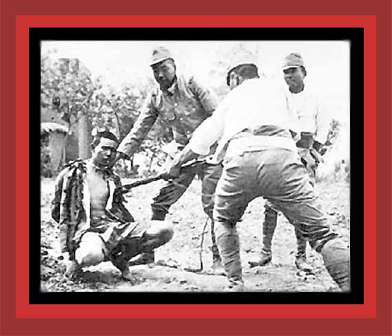

| Durng the Sino-Japanese War, 1937-1945, one of the many ways the Japanese military would murder their Chinese prisoners was by bayonet. But this was not a simple execution. Often the purpose was to give their new soldiers real life bayonet practice, and especially to remove their normal inhibitions against killing other human beings. This practice is what may be going on in this photo. For documentation on Japan's murder of near 4,000,000 Chinese during the Sino-Japanese War (which in 1941 merged into World War II), see China's Bloody Century Source: "Nanjing Massacre:" 300,000 Chinese People Killed, 20,000 Women Raped..." |